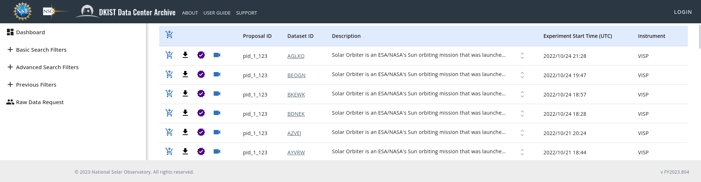
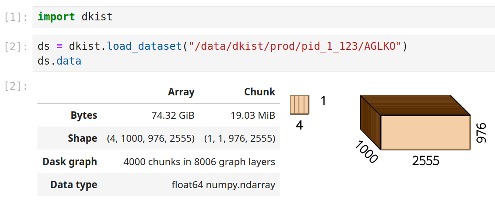

DKIST Level 1 Data and Using it in Python
Stuart Mumford

The Inouye Solar Telescope
- At the Haleakalā Observatory on the island of Maui.
- DKIST has been observing science proposals since early 2022.
- 179 datasets are now available publically.
- Two instruments currently on-line:
- Visible Spectropolarimeter (VISP)
- Visible Broadband Imager (VBI)
- Three more instruments coming on-line:
- Cryogenic Near Infrared Spectropolarimeter (Cryo-NIRSP)
- Diffraction Limited Near Infrared Spectropolarimeter (DL-NIRSP)
- Visible Tunable Filter (VTF)
Python Tools
dkistpackage available now on PyPI and conda-forge.- Developed openly on GitHub since the start.
- A SunPy affiliated package.
- Provides:
- a plugin for SunPy's Fido to search datasets,
- helpers for downloading FITS files with Globus,
- A
Datasetclass based onNDCube.
- Uses
daskto delay I/O of FITS files. - Uses
gWCSto represent the coordinates of the whole dataset.

Level One Data
The data holdings at the DKIST Data Center are catalogued in unique "datasets".
A dataset broadly consists of a continuous set of observations taken by a single instrument, at a single pass band, with similar instrument parameters.
This means that a dataset can contain a wide variety of data, such as, slit-spectra, imaging, spectropolarimetic data etc.

Makeup of a dataset
- Each "calibrated exposure" is in a FITS file with a complete header.
- Therefore each dataset contains many FITS files.
- To reconstruct these files into a multi-dim array we need to order them.
- Each dataset also includes: An ASDF file, a preview movie and a quality report.
ASDF Files
- Advanced Scientific Data Format (ASDF) is a new file format with more flexible metadata than FITS.
- DKIST ASDF files contain:
- A copy of all the FITS headers for all files.
- A copy of the inventory record which is searchable via the DKIST data search API.
- An ordered list of filenames, and information about the array, such as dtype and shape.
- A gWCS object representing world coordinates for the whole dataset array.
Search and Download - Data / Metadata Separation
How can we make it possible to download a subset of a dataset based on metadata.
>>> Fido.search(a.dkist.Embargoed.false)
<sunpy.net.fido_factory.UnifiedResponse object at 0x7f95313b5d50>
Results from 1 Provider:
179 Results from the DKISTClient:
Start Time End Time Instrument Wavelength Dataset ID ...
nm ...
----------------------- ----------------------- ---------- -------------- ---------- ...
2022-06-02T17:22:50.176 2022-06-02T17:47:30.856 VBI 486.0 .. 486.0 BLKGA ...
2022-06-02T17:21:55.346 2022-06-02T17:47:58.286 VBI 393.0 .. 393.0 BJLKB ...
2022-06-02T17:22:22.754 2022-06-02T17:48:25.694 VBI 430.0 .. 430.0 BKJYA ...
... ... ... ... ... ...
2022-05-24T19:17:29.766 2022-05-24T20:05:01.446 VBI 393.0 .. 393.0 ARMVX ...
2022-05-24T18:20:24.766 2022-05-24T19:08:51.285 VBI 393.0 .. 393.0 APYJL ...
2022-05-24T19:17:02.334 2022-05-24T20:04:34.014 VBI 430.0 .. 430.0 BVYJK ...
Length = 179 rows
Search for metadata data
The DKIST search portal and dkist package allow searching based on a limited subset of all metadata.
Downloading the ASDF file gives you a complete set of metadata for all files contained in a dataset.
This means we can decide which parts of the dataset we are interested in.
# Load the dataset
ds = dkist.load_dataset("~/dkist/data/AGLKO/")
# Select headers for only frames with bad r0
bad_headers = ds.headers[ds.headers["ATMOS_R0"] > 1]
# Slice up to the index of the first bad frame
sds = ds[0, :bad_headers[0]["DINDEX3"]-1, :, :]
# Download only files with good seeing, to the same directory.
sds.files.download()
Too many files - Dask and delayed IO
You think you can open 10s or 100s of thousands files at once, but you just can't.
Rather than opening all the files to read the headers to reconstruct the whole array, we read the "recipe" for the array from the ASDF file.
We build an array comprised of all the arrays in the FITS files, but it's "delayed" by using dask, so the files are only opened on demand.

Delayed Compute
ds = dkist.load_dataset("~/dkist/data/AGLKO/")
rebinned_ds = ds[0, ..., :-5].rebin((10, 1, 10))
computed_data = rebinned_ds.data.compute()
Current and Future Status
dkistv1.0 available now! On PyPI and conda-forge.
Features Implemented in v1.0:
- Reading ASDF files into
Datasetobjects. - A SunPy Fido client for searching DKIST datasets.
- Helpers for making Globus data downloads easier.
- Extensions to the
NDCubeAPI for working with the collection of FITS files. - Internal functionality for building
daskarrays from many FITS files.
Upcoming development:
- Fixing use of
Dataset.cropfor slicing based on world coordinates. - Helpers and documentation for modifying Datasets (i.e. shifting pointing).
- Performance improvements, on transforms and data loading.
- Better tools for working with VBI mosaics.
Thank You